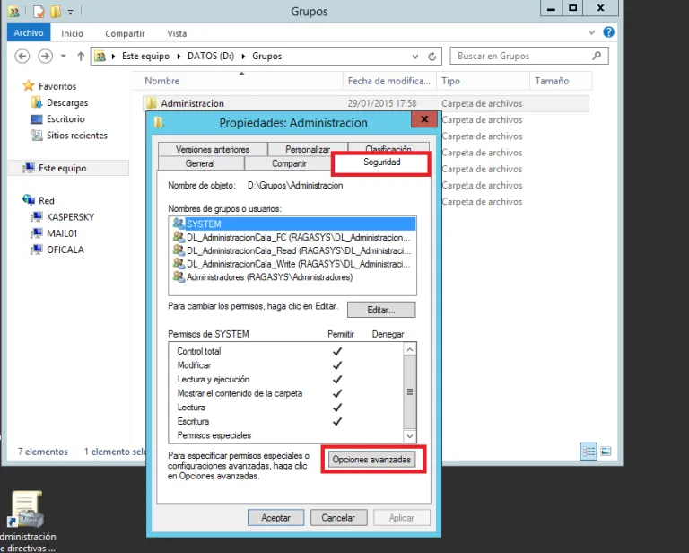

Introduccion
Este trabajo parte desde la misma base de explicacion de que son los usuarios y roles en windows server active directory la cual es util para las actividades 9 y 10 por tanto esta explicacion con un ejemplo muy ilustrativo sera el mismo para ambos documentos pero la actividad 10 agregara el tema de agregar equipos a un dominio lo cual nos terminara de detallar el tema sesiones que no es explicado en la descripcion/ejemplo de usuario y grupoas de active directory.
Como introducción vamos a explicar y diferenciar que son los permisos para los recursos compartidos y los permisos NTFS.
En un servidor de archivos, el acceso a una carpeta puede estar determinado por dos conjuntos de entradas de permisos: los permisos de recurso compartido definidos en una carpeta y los permisos NTFS definidos en la carpeta (que también se puede definir en los archivos). Los permisos de recurso compartido suelen utilizarse para administrar equipos con sistemas de archivos FAT32 u otros equipos que no utilizan el sistema de archivos NTFS.
Los permisos de recurso compartido y los permisos NTFS son independientes en el sentido de que ninguno modifica al otro. Los permisos de acceso final en una carpeta compartida se determinan teniendo en cuenta las entradas de permiso de recurso compartido y de permiso NTFS y se aplicarán siempre los permisos más restrictivos.
Los permisos de las carpetas o recursos compartidos que el sistema nos deja configurar son:
- Control total: el usuario o grupo tomara propiedad del recurso y puede realizar cualquier tarea.
- Cambiar: crear, eliminar y modificar archivos y carpetas.
- Lectura: permite leer y ejecutar.
Los permisos estándar o predeterminados NTFS que se pueden asignar a una carpeta son:
- Control total: para leer, cambiar, crear y ejecutar bien sean programas o carpetas.
- Lectura y ejecución: para ver el contenido y ejecutar programas de una carpeta.
- Modificar: para poder cambiar los ficheros y las carpetas, pero sin crear y eliminar ficheros ni carpetas nuevas.
- Lectura: para poder ver y abrir el contenido.
- Escritura: para poder crear y cambiar los ficheros y carpetas existentes.
- Mostrar el contenido de la carpeta.
- Además de los permisos NTFS estándar, podemos personalizar mejor las tareas que los usuarios o grupos de usuarios pueden realizar sobre un recurso compartido aplicando los permisos especiales NTFS.
Para empezar vamos a ver cómo vamos a distribuir los recursos compartidos en nuestro servidor de ficheros, tendremos una unidad de disco duro independiente para este fin, así separaremos los archivos de sistema de los datos, crearemos tres recursos compartidos:
- Publico: con acceso de lectura, escritura, ejecución y modificación para todos los usuario del sistema.
- Grupos: en este recurso vamos a crear las carpetas departamentales con acceso de lectura, escritura, ejecución y modificación para su departamento correspondiente y acceso denegado para los demás usuarios del sistema.
- Usuarios: en este recurso vamos a crear las carpetas personales de los usuarios con acceso de lectura, escritura, ejecución y modificación para cada usuario según corresponda, acceso denegado para todos los demás usuarios.
Empezaremos creando la carpeta Publico y le vamos a asignar los siguientes permisos de recurso compartido:
Una vez que hemos compartido la carpeta y le hemos asignado los permisos de recurso compartido, vamos a aplicar los permisos NTFS, para ello nos vamos a la pestaña Seguridad > Opciones Avanzadas:
Para el grupo Administradores, antes le hemos indicado que no herede los permisos del contenedor padre, es decir, que no herede los permisos de la unidad D:
Para el resto de usuarios:
Una vez asignados todos los permisos marcamos el check seleccionado en la captura de pantalla, para que los directorios anidados dentro de éste hereden la configuración de los permisos:
Ahora vamos a crear la carpeta Grupos y le vamos a asignar los siguientes permisos de recurso compartido:
Una vez que hemos compartido la carpeta y le hemos asignado los permisos de recurso compartido, vamos a aplicar los permisos NTFS, para ello nos vamos a la pestaña Seguridad > Opciones Avanzadas
Para el grupo Administradores, antes le hemos indicado que no herede los permisos del contenedor padre, es decir, que no herede los permisos de la unidad D:
Para el resto de usuarios:
Una vez que nos hemos creado el recurso compartido Grupos con sus permisos, vamos a crear dentro de éste, carpetas para los distintos departamentos de nuestra empresa y le asignaremos los permisos que le correspondan a cada departamento, la estructura nos quedaría de la siguiente manera:
Ahora sólo voy a mostrar cómo se configuran los permisos para un departamento, ya que para los demás se hará de la misma manera, por ejemplo, para el departamento de Administración, antes vamos a hacer un inciso para explicar que la técnica que vamos a usar para asignar los permisos departamentales será AGDLP, que significa esto, pues que en primer lugar vamos a crear las cuentas de los usuarios (A, Accounts), en segundo lugar crearemos los grupos de Seguridad Global (G, Global), en tercer lugar crearemos los grupos de Dominio Local (DL, Domain Local) y por último asignaremos los permisos(P, Permissions)
Ahora vamos a crear los grupos de Dominio Local y en ellos vamos a anidar los grupos de Seguridad Global, para ello nos abrimos la consola de Usuarios y equipos de Active Directory en nuestro controlador de dominio, y nos creamos una Unidad Organizativa llamada GruposDL, donde vamos a crear todos estos grupos de DL, los cuáles usaremos para asignar los permisos a las carpetas departamentales:
Mostraremos la configuración para el departamento de Administración, ya que para los demás será la misma.
Nos creamos el primer grupo para permisos de Control total, llamado DL_AdministracionCala_FC.
En la pestaña “General” introducimos los datos correspondientes al grupo:
En la pestaña “Miembros” introducimos los usuarios o grupos que queremos que pertenezcan a este grupo, en este caso no tenemos ningún miembro:
En la pestaña “Administrado por” podemos indicar el usuario que queremos que administre este grupo, quitándole carga administrativa al Administrador del sistema, esto ya depende de los roles de nuestra organización, en este caso los únicos usuarios que pueden administrar el grupo son los Administradores:
Nos creamos el segundo grupo para permisos de lectura, llamado DL_AdministracionCala_Read.
En la pestaña “General” introducimos los datos correspondientes al grupo:
En la pestaña “Miembros” introducimos los usuarios o grupos que queremos que pertenezcan a este grupo, en este caso no pertenece a ninguno:
En la pestaña “Miembro de” introducimos si este grupo pertenece a otro grupo, en este caso no pertenece a ninguno:
En la pestaña “Administrado por” podemos indicar el usuario que queremos que administre este grupo, quitándole carga administrativa al Administrador del sistema, esto ya depende de los roles de nuestra organización, en este caso los únicos usuarios que pueden administrar el grupo son los Administradores:
Nos creamos el tercer grupo para permisos de escritura, llamado DL_AdministracionCala_Write.
En la pestaña “General” introducimos los datos correspondientes al grupo:
En la pestaña “Miembros” introducimos los usuarios o grupos que queremos que pertenezcan a este grupo, en este caso pertenecen al grupo de DL, el grupo de Seguridad Global “GAdministracionCala” que contiene a su vez todos los usuarios del departamento de Administración y el grupo de Seguridad Global “GDireccion” que contiene todos los usuarios del departamento de dirección:
En la pestaña “Miembro de” introducimos si este grupo pertenece a otro grupo, en este caso no pertenece a ninguno:
En la pestaña “Administrado por” podemos indicar el usuario que queremos que administre este grupo, quitándole carga administrativa al Administrador del sistema, esto ya depende de los roles de nuestra organización, en este caso los únicos usuarios que pueden administrar el grupo son los Administradores:
Para crear los demás grupos de Dominio Local y asignar los permisos adecuados a cada departamento seguiremos la misma política que con el grupo Administración.
Una vez creados los grupos de Dominio Local aplicaremos los permisos a las carpetas departamentales, procederemos a aplicarlos sobre la carpeta “Administracion” ya que para los demás directorios departamentales será exactamente igual:
En las propiedades de la carpeta Administración accedemos a la pestaña Seguridad > Opciones Avanzadas:política que con el grupo Administración.

Le indicamos que no herede los permisos de la carpeta principal “Grupos”:
Para los permisos de control total asignamos:
Para los permisos de lectura asignamos:
Para los permisos de escritura asignamos:
Para el grupo administradores asignamos Control Total:
Una vez asignados todos los permisos marcamos el check seleccionado en la captura de pantalla, para que los directorios anidados dentro de éste hereden la configuración de los permisos:
Los permisos del departamento de Contabilidad quedaría:

Los permisos del departamento de Dirección quedaría:
Los permisos del departamento de Ingeniería quedaría:
Los permisos del departamento de Publicidad quedarían:
Los permisos del departamento TIC quedarían:
Los permisos del departamento de Ventas quedarían:

Ahora vamos a crear la carpeta Usuarios y le vamos a asignar los siguientes permisos de recurso compartido:
Una vez que hemos compartido la carpeta y le hemos asignado los permisos de recurso compartido, vamos a aplicar los permisos NTFS, para ello nos vamos a la pestaña Seguridad > Opciones Avanzadas:

Para el grupo Administradores, antes le hemos indicado que no herede los permisos del contenedor padre, es decir, que no herede los permisos de la unidad D:
Para el resto de usuarios:
Una vez que nos hemos creado el recurso compartido Usuarios con sus permisos, vamos a crear dentro de éste, carpetas para los distintos usuarios de nuestra empresa y le asignaremos los permisos que le correspondan a cada uno de ellos, éstas carpetas anidadas dentro del directorio Usuarios serán las carpetas personales de cada usuario, a las que sólo ellos tendrán acceso, la estructura nos quedaría de la siguiente manera:
Ahora sólo voy a mostrar cómo se configuran los permisos para un usuario, ya que para los demás se hará de la misma manera, por ejemplo para el usuario “Jesús”.
En las propiedades de la carpeta Jesus accedemos a la pestaña Seguridad > Opciones Avanzadas:
Le indicamos que no herede los permisos de la carpeta principal “Usuarios”:
Para el usuario Jesús, le asignamos los siguientes permisos:
Para el grupo Administradores Control Total:
Para asignar los permisos a los demás usuarios del sistema será exactamente igual.
Ahora para mapear estos tres recursos compartidos (Publico, Grupos y Usuarios) como unidades de red, para los usuarios del Active Directory cada vez que inicien sesión en un equipo del dominio, crearemos el siguiente script (un .bat) y lo ubicaremos en la carpeta compartida SYSVOL, exactamente en la ubicación C:\Windows\SYSVOL\sysvol\ragasys.net\scripts:
Para que este script funcione tendremos que editar las propiedades de los usuarios del dominio, yo tengo como costumbre antes de crear todos los usuarios del dominio, crearme una plantilla de usuario por cada departamento y utilizar esta plantilla para ir creando los usuarios, mostraré la configuración de la plantilla creada para el departamento de Administración, ya que para los demás será exactamente igual:
Como podemos ver cada vez que un usuario inicia sesión en un equipo del dominio tiene los recursos compartidos como unidades de red:
Con esto ya tendríamos configurado nuestro servidor de archivos, automáticamente se asignan los roles:

Conclusion
En congruencia conla intruduccion de este archivo pudimos ver de forma muy ilustrativa el como funcionan los grupos y usuarios de active directory siendo estos faciles de digerir al compararlos con el sistema de usuarios de cualquier sistema operativo convencional. asi pues despues de este documento nos seria facil construir un sistema empresarial complejo de usuarios grupos y permisos
Referencias
Dominios y servicios de directorio (Dominio (Controlador de dominio (Enâ¦. (s. f.). Coggle. Recuperado 22 de septiembre de 2020, de https://coggle.it/diagram/WKcSIX5jXwABfxkK/t/dominios-y-servicios-de-directorio